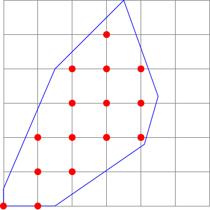
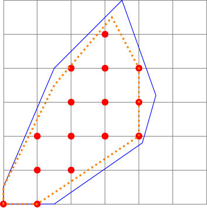
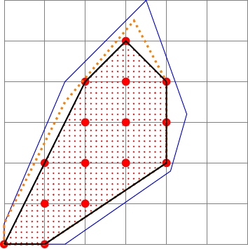

\(\newcommand{\R}{{\mathbb{R}}}\) \(\newcommand{\Z}{{\mathbb{Z}}}\) \(\newcommand{\N}{{\mathbb{N}}}\) \(\newcommand{\var}[1]{{\color{red}{\mathbf{#1}}}}\) \(\newcommand{\param}[1]{{\color{blue}{#1}}}\) \(\newcommand{\mathsc}[1]{{\normalfont\textsc{#1}}}\) \(\def\sc#1{\dosc#1\csod}\) \(\def\dosc#1#2\csod{{\rm{#1{\rm\small #2}}}}\) \(\newcommand{\set}[1]{{\sc#1}}\) \(\newcommand{\mathvar}[1]{\var{#1}}\) \(\newcommand{\mathpar}[1]{\param{#1}}\) \(\newcommand{\half}{{\small{\frac{1}{2}}}}\)
16. Mixed Integer Linear Models¶
16.1. Introduction¶
A Mixed Integer Linear Optimization model (MILO or MILP) is an optimization problem with some variables constrained to be integer. Apart from this, the model is linear, with a linear objective function and linear equalities or inequalities. Quite often all variables are constrained to be integer, in which case the problem is called an Integer Linear Optimization problem, (ILO or ILP). The standard form of an ILO problem is
Differently from Linear Optimization models, the feasible set is now a discrete set, composed of a finite or an infinite but countable set of feasible solutions.
Apparently the problem, when compared to the pure linear case, might seem simpler to solve; in the finite case, an explicit enumeration of all feasible solutions might be possible and, thus, in finite time the optimal feasible solution, whichever the objective, can be found. Unfortunately the exact opposite is true: problems involving discrete variables are, in most cases, much more difficult to solve than pure linear optimization ones. The discrete and possibly finite nature of the feasible set, although a desirable property for what concerns finite convergence of an algorithm, does not guarantee that an efficient algorithm can be built. Indeed, frequently, an explicit enumeration of all feasible solutions requires a computational time which increases exponentially with the dimension of the problem. Even when restricting to the most basic and also most useful ILO problem where all variables are constrained to be binary:
an explicit enumeration would require checking \(2^n\) solutions, a task which becomes impossible for modern computational hardware already for modest values of \(n\), say 100 or more. There are many difficulties in solving this kind of problems, and it is not the aim of this notes to present algorithmic approaches. However, for integer optimization models, the formulation, i.e., the model, and the possibility of solving a specific instance to optimality are quite strongly related. The same problem, or the same constraints, might be formulated in different possible ways, only some of which will lead to a solution requiring a reasonable computational effort. Thus we need to scratch at least the surface of the computational aspects involved in the solution of integer optimization problems.
Most commercial as well as open source software for the solution of integer linear optimization problems are based on an algorithmic scheme called Branch & Bound, or on some variations like, e.g., Branch & Cut. A fundamental requirement for these algorithms is the availability of good lower bounds for the objective function.
Given any optimization problem
a relaxation is another optimization problem
which satisfies the following requirements:
\(Q \supseteq S\)
\(\forall\,\var{x} \in S \implies g(\var{x}) \leq f(\var{x})\)
These two requirements have been given in order to guarantee that the optimal value of the relaxation, if an optimum exists, is always a lower bound of the optimal value of the original problem. Without providing a formal proof, we can see that the first requirement asks for a feasible set of the relaxation which contains all of the original feasible solutions. This is one possible technique for obtaining a lower bound, namely expanding the set of feasible solutions. The second requirement states that for all feasible solutions, the relaxation produces a lower bound of the original objective function. And this is clearly a second possibility for obtaining a lower bound.
In mixed integer linear optimization, the easiest bound is found through the continuous relaxation, which simply corresponds to dropping the integrality constraint. Finding a good lower bound, which in a minimization context will mean finding one with the highest possible optimal objective value, is a fundamental step in building good exact optimization algorithms. By “exact” we mean algorithms which either will stop with a certifiably optimal solution to the problem, or they will stop with a proof of infeasibility of the problem, or, when stopped before natural termination, will return a feasible solution along with an upper bound on the error with respect to the optimum value. An exact algorithm, if stopped before termination, might however return no feasible solution, and, in such a case, we are left with the doubt whether the problem is infeasible or a feasible solution might exist but was not found yet. The current “optimality gap” estimate, which is the difference between the objective value of the best feasible solution found so far and the current lower bound on the optimum, depends both on the quality of feasible solutions observed as well as on the quality of the lower bound. Thus, in order to reduce this gap as much as possible, two strategies are needed:
finding good feasible solutions fast. This can be done within Branch & Bound methods, but also outside them, by calling special purpose heuristic methods
finding good lower bounds. This is mainly obtained through “good” relaxations
In a Branch & Bound scheme, the algorithm proceeds by subdividing the feasible set into subsets, and trying to solve subproblems within these subsets in a recursive way. Splitting the feasible region into subsets might have beneficial effects: sometimes the sub-problem associated to a subset is easy to solve to optimality; sometimes it is empty and, thus, no more subdivisions are required; sometimes computing the lower bound in a smaller region yields an higher lower bound and, in some cases, this lower bound is greater then the current upper bound (best observed feasible solution). If this is the case, the region can be discarded from the solution process (“fathomed”) as it cannot contain an optimal solution. This procedure is called bounding and gives the name “bound” to the algorithm
Having good relaxations is fundamental in bounding and in stopping. It is important to consider that the same optimization problem can be formulated in many different ways, and that the way in which a problem is formulated might have a strong impact on the possibility to solve it to optimality in “reasonable” computational time. To illustrate the concept of relaxation, let us take a look to a toy problem in two variables.

The feasible set is a discrete, finite, set of points denoted in the picture by red dots. The formulation of this feasible set might be obtained through a set of linear inequalities, corresponding to the blue polyhedron, with the restriction of all variables to assume integer values only. It is easy to see, however, that the polyhedron indicated in this picture is not the unique possible formulation for the same feasible set. There exist in fact different sets of inequalities which generate a polyhedron whose integer elements are exactly the same as those in the picture. As an example, consider the following:

The polyhedron represented with dotted orange lines in the above picture is indeed a correct formulation of the same problem. In fact the set of feasible points with all integer coordinates is exactly the same as before. Let us formalize this concept.
Given an Integer Linear Optimization problem, \(P_1\):
let \(S \subseteq \Z^n\) be the feasible set. Consider another ILO problem, \(P_2\):
We say that the formulations \(P_1\) and \(P_2\) are equivalent if and only if they represent the same set of feasible solutions:
Why we might be interested in finding more than one correct formulation of the same problem? The reason is in the computational aspects. Consider, for the problem in the above figures, an optimization problem consisting in the minimization of, say, \(-x_2\). In other words, we are looking to the feasible solution with maximum value of the second variable, i.e., the feasible point which lies as far as possible towards north. It is quite evident that the optimal solution to this problem is point \((3,5)\) with an objective function value equal to \(-5\). If we relax the first formulation, the optimal solution will be the top vertex in the blue figure, with an objective value \(-6\). If we perform the same operation in the second formulation, the optimal solution of the relaxed problem would be \((3.2, 5.5)\), with an objective function value \(-5.5\), which is significantly closer to the optimum value. We can say, in this example, that the second formulation, although perfectly equivalent to the first one from the point of view of the set of feasible solutions, is preferable from the point of view of the quality of the relaxation. A formalization of this concept is the following:
Given two correct formulation of the same mixed integer linear optimization problem, we say that formulation \(P_2\) is a stronger formulation with respect to \(P_1\) if
In other words, the second formulation is stronger (and thus better) than the first one if its continuous relaxation generates a polyhedron which is strictly included in the continuous relaxation of the first one.
Given two formulations, it is not granted than one of the two is stronger than the other one, as neither of the two relaxed polyhedra might be contained in the other one. However, if this were the case, a third, stronger, formulation can always be found by taking all of the constraints of both the first and the second formulation. This gives rise to a formulation whose relaxation is the intersection between the two original ones and, thus, it is contained in both.
Given the above definition, we might ask ourselves whether, in the hierarchy of possible formulations, there exist a “best” one, that is, a formulation whose relaxation is contained in every correct formulations of the problem. The answer is positive, at least under quite mild assumptions like, e.g., the existence of a formulation of the problem in which all of the coefficients are rational numbers. This strongest formulation is called the ideal formulation. The following figure reports an example:

As it can be seen in the figure, but also proven in general, the ideal formulation is characterized by the fact that its relaxation is the convex hull of the feasible set, that is, the smallest convex set which contains all feasible solutions. The important theoretical result is that this smallest convex set is a polyhedron, so it might be represented as the set of solutions to a finite set of linear inequalities. Another fundamental property of the ideal formulation is the fact that every vertex, or, in the linear optimization context, every basic feasible solution of the ideal relaxation is feasible (i.e., is integer).
From the point of view of our capability of solving a complex mixed integer optimization problem it might seem that knowing the ideal formulation would allow us to solve the problem with great efficiency, as the simplex algorithm, or any algorithm which returns an optimal basic solution, will find the optimal integer solution, without any necessity to resort to branching or bounding. We say, in this case, that the branch and bound algorithm stops at its root. Although knowing a good formulation and, possibly, one which is as close as possible to the ideal one, might be very important in practice, some important issues have to be taken into account:
in most real-life problems it is impossible to obtain the ideal formulation
in some classes of widely studied problems the ideal formulation is known, or at least a very good formulation is available. However, very frequently, these good formulations have a huge number of constraints, typically exponentially growing in cardinality with the dimension of the original problem. Thus even if it remains true that a single run of a linear optimization algorithm would return the optimal integer solution, the huge dimension of the linear problem makes it impossible to solve it in reasonable time. And, in most cases, it is even impossible for lack both of space and of time, to list all of the constraints.
However, it should be observed that it is not necessary to know a very good formulation of the whole problem. It seems more important to know a formulation which is good enough in the neighborhood of the optimal solution
The last observation tells us that a good strategy to solve a complex optimization problem might be that of starting with a good enough formulation, solving its relaxation and, if the solution is not feasible (integer) than a procedure might be called which generates one, or a few, constraints to be added to the current formulation in order to exclude the relaxed solution, without excluding any feasible one. These constraints are called cuts and they might be obtained from an implicit representation of the ideal formulation, or, at least, from a large set of possible inequalities.
These considerations might be investigated in a deeper way, but this would lead us outside the scope of this volume. What is very relevant and important here is to stress the fact that modeling, in the integer optimization context, is strongly linked to the computational aspects of the available solution algorithms. This was not the case in pure linear optimization problems, as seen up to now. In the purely linear case, all of the effort in modeling is in finding a correct representation of the problem. In integer optimization, unfortunately, this is not enough, in most cases, and a formulation needs to be found which is not only correct, but also “strong enough”.
For the interested reader, some references to the polyhedral aspects of mixed integer linear optimization can be found in [Nemhauser and Wolsey, 1999], [Papadimitriou and Steiglitz, 1998], [Schrijver, 2003], among many others.
16.2. Modeling with integer variables¶
There exists a large class of problems in which variables need to be integer: in a production problem, the size of the batch to be produced is usually an integer quantity; in any diet problem, many of the variables associated to the quantity of food to be bought should be integer, as it is not allowed to purchase a part of a box or of a can. Even in usual cost minimization problems, the objective function can be thought of as integer valued, as it is unreasonable to consider monetary values which are not integer multiples of a given unit of reference (for example, one Euro cent).
Although problems of this kind are everywhere, actually they are not usually considered as the main body in integer optimization and, indeed, often their resolution does not require any special integer optimization technique. The main reason lies in the fact that, quite often, problems of this kind have solutions whose numerical value is, in a certain sense, “large”: in a cost minimization problem, often the objective is on the order of thousands or millions of Euro. In these cases, rounding the solution to the nearest integer does not change much the solution and can cause at most a tiny, negligible, violation of some constraint. So, these problems are indeed integer optimization ones, but it is possible to disregard integrality, solve them as continuous optimization models, and force the obtained solution to be integer through a simple rounding to the closest integer. Quite different is the case in which the components of the solution that must take on integer values have a magnitude which is comparable with those of the variations introduced by rounding: in a diet problem, as an example, we might need to decide, for each food, whether to buy a single portion of it or not to buy that food at all: in this case it is impossible to establish a correct way to round a fractional solution to either 1 or 0, unless both possibilities are separately checked. Indeed, the decision problem itself is equivalent to that of choosing whether it is more convenient to round the solution either to 0 or to 1. So there is a large class of difficult integer linear optimization problems characterized by a rather limited number of alternatives for each decision variable - at an extreme, the case of binary variables, in which the choice is limited to two possible values only. The apparent simplicity of this case is contradicted by the inherent difficulty of exploring an exponential number of possibilities: we have in fact two possible values for a variable, 4 for two variables, 8 for three variables, …, \(2^n\) for \(n\) binary variables.
Very often the decisions to be taken are not integer valued. But some decisions might be of a discrete nature: “either this action or that one has to be chosen”. Sometimes variable ranges are discontinuous. In some other cases, logical constraints are to be imposed: “if this happens than that should be imposed”. In these cases it is possible to introduce additional variables into the problem that allow the correct formulation of these decisions. Usually, these additional variables are binary, as those variables might be associated to true/false statements and used to formulate logical constraints, as we will see next.
16.2.1. Using binary variables in logical constraints¶
In this chapter we will see how binary variables can be used as indicator functions, i.e. functions which have value one if and only if a variable in the problem belongs to a specific set. These indicator variables can be used to detect if a specific condition occurs and then used to impose another condition to the same or to another variable. This short presentation cannot convey the correct information on the real opportunities available when using binary variables, so we prefer to introduce the argument with an example.
- application:
Deciding road direction in urban networks
Consider a graph in which some arcs are not oriented. On each arc a maximum capacity is assigned. The problem we would like to model in this example is the decision on the orientation of these arcs. As an example, in a road network we would like to choose the directions for a few one-way arcs, in such a way that a measure of the maximum flow is optimized. In particular, consider the case of a maximum flow network problem between a source and a destination node in which we need to choose the orientation of a few arcs so as to maximize the flow. A more realistic application might consider two different flows, corresponding to morning and afternoon peak hours. During morning peak a source node generates flow towards the destination, while during the afternoon peak all the flow at the destination node has to be routed back to the origin. The decision problem on how to make the network directed is a relevant network design problem.
Here we will see how it is possible to use binary variables to model the binary decision on the allowed direction of flow for a specific edge \(\{i,j\}\) which we would like to transform into an oriented arc, either \((i,j)\) or \((j,i)\). We introduce two binary variables associated to each of the two possible arcs: \(\mathvar{\delta}_{ij}\) and \(\mathvar{\delta}_{ji}\); to each of these variables we would like to associate the allowed direction of travel: if \(\mathvar{\delta}_{ij} = 1\) the arc is oriented so that the flow is allowed in the direction \(i \rightarrow j\). When formulating the model we should take into account that we need to link variables by means of equations or inequalities, while “propositional connectives”, like NOT (negation), IF, AND, OR, NAND, NOR, XOR, are not allowed.
Saying that an arc has a specific orientation, means that along that arc a flow is allowed, whose value is between zero and the capacity of the arc. On the contrary, if the flow is not possible along that arc, both the lower as well as the upper bound on the flow will be zero. Denoting by \(\param{CapMax}_{ij}\) the maximum arc capacity, the following set of feasible solutions needs to be considered:
\begin{align*} \mathvar{\delta}_{ij} = 1,&\quad 0 \leq \var{f}_{ij} \leq \param{CapMax}_{ij} \\ \mathvar{\delta}_{ij} = 0,&\quad 0 \leq \var{f}_{ij} \leq 0 \end{align*}The last double inequality simply states that the flow must be zero. Thanks to the fact that the logical variable is binary, we can use it to “switch” the capacity on or off: this is easily obtained multiplying the arc capacity by the binary variable. Thus the set of feasible solutions given above, which is indeed associated to a logical constraint, can be formulated through a pair of linear inequalities:
\begin{align*} 0 \leq \var{f}_{ij} \leq \mathvar{\delta}_{ij} \param{CapMax}_{ij} \end{align*}This is a fundamental constraint in which a link is defined between a binary decision variable and a continuous flow variable. A similar model should be imposed to the flow on the opposite direction:
\begin{align*} 0 \leq \var{f}_{ji} \leq \mathvar{\delta}_{ji} \param{CapMax}_{ij} \end{align*}In the problem analyzed here a constraint should also be imposed to force one and only one direction to be chosen. In practice it is sufficient to impose that the decision on one of the two directions is opposite to the decision on the other one. That is, if we decide to allow a flow along one of the two directions, flow must be prohibited along the other one. In formula:
\begin{align*} \mathvar{\delta}_{ji} = 1 - \mathvar{\delta}_{ij} \end{align*}or, equivalently,
\begin{align*} \mathvar{\delta}_{ij} + \mathvar{\delta}_{ji} = 1 \end{align*}The first equality reminds us that the value of one of the two logical variables is the logical negation of the other one (one is true, i.e., equal to 1, if and only if the other one is false, or 0). That equation shows how to define a logical variable as the negation of another one. The second, equivalent, equation can also be interpreted as an exclusive or (XOR) statement: it forces exactly one out of the two variables to be true (one), while the other one is forced to zero. This might be extended to a generalized XOR statement involving several variables.
The complete model is thus:
\begin{align*} 0 \leq \var{f}_{ij} & \leq \mathvar{\delta}_{ij} \param{CapMax}_{ij} \\ 0 \leq \var{f}_{ji} & \leq \mathvar{\delta}_{ji} \param{CapMax}_{ij} \\ \mathvar{\delta}_{ij} + \mathvar{\delta}_{ji} & = 1 \end{align*}Of course in this problem it is also possible to eliminate one of the two binary variables, solving the corresponding XOR equation:
\begin{align*} 0 \leq \var{f}_{ij} & \leq \mathvar{\delta}_{ij} \param{CapMax}_{ij} \\ 0 \leq \var{f}_{ji} & \leq (1- \mathvar{\delta}_{ij}) \param{CapMax}_{ij}. \end{align*}
This application has been presented in order to show an elementary link between an indicator variable and a continuous one. In the example above, it was shown that, through a binary variable, two different situations can be modeled (flow allowed / no flow).
A very useful tool to link binary decision variables to other variables is the following constraint:
or the analogue one in the opposite direction:
Here \(\var{x}\) represents a variable or an expression, \(\mathvar{\delta}\) is a binary indicator variable (when possible, we will use \(\mathvar{\delta}\) to denote binary variables in such a way that they can be immediately recognized), \(\param{A}\) and \(\param{B}\) are suitable constant. Let us consider the first inequality in more detail. Considering the two possible values for the binary variable, the set of feasible solutions turns out to be:
If we assume, e.g., that \(\param{A} <\param{B}\), then in both cases \(\var{x} \leq \param{B}\) will be true. However, in one case a more stringent upper bound will be obtained:
The first is a “trivial” constraint, which is always satisfied whichever the value of the logical variable \(\mathvar{\delta}\); the second one is a logical constraint, in the form of an implication.
If, on the opposite, \(\param{B} <\param{A}\), the same constraint would represent:
In the example of the one-way arc problem, this constraint was used with the choice \(\param{A} = \param{CapMax}_{ij}\) and \(\param{B} = 0\). In fact, this corresponds to imposing the logical constraint
It might be worth to observe that the above implication only requires that the flow is zero in the event that the binary variable is zero. In the opposite case, it is not necessarily true that the flow is non zero.
In general, the constraint
can be interpreted as follows: if \(\param{A} < \param{B}\) the constraint represents the logical implication
or, equivalently from a logical point of view,
If \(\param{A}> \param{B}\) then the logical constraint would correspond to:
or, equivalently,
It seems to be a good idea, at this point, to recall some basic facts of first order propositional logic. The \(\implies\) connective can be written in an equivalent way using the “OR” (\(\lor\)) and the “NOT” (\(\lnot\) ) connectives.
In particular, \(A \implies B\) is logically equivalent to \(\lnot A \lor B\). Writing the truth table of the implication we get:
We can therefore see that \(A \implies B\) corresponds to the following events: if \(A\) is true then \(B\) must be true, while if \(A\) is false, \(B\) can be either true or false. Or, put in a different but equivalent way, the implication only excludes the possibility that \(A\) is true while \(B\) is false, all other possible combinations being acceptable.
It is also easy to see that the statement
is logically equivalent to
as both are equivalent to
To prove this statement it is sufficient to build the truth tables of both logical expressions.
Binary indicator variables are often used in a model to add logical constraints linking continuous variables together. As an example, in a diet problem, consider the case in which the following constraint is required: “if food A is in the diet, then food B should be absent”. As an example, A might be fish while B is red wine. Denoting by \(\var{x}_{A}\) and \(\var{x}_{B}\) the variables corresponding to the quantities of the two food types, we would like to add the constraint
One possibility to formulate this logical constraint consists in inserting, within the implication, a binary variable to indicate whether the event occurs:
In this case we can split the problem and formulate the two implications:
Let us start with the first one, which can be written in an equivalent way with the logical variable on the left hand side of the implication:
Recall that logical constraints are used to impose inequalities; but \(\var{x}_A \leq 0\) is equivalent to \(\var{x}_A = 0\), as non negativity constraints are imposed on all variables in a diet problem.
The logical constraint as it has just been formulated associates a specific upper bound to the continuous variable. In order to be able to correctly formulate a constraint representing this logic, a “trivial” upper bound, which is always valid, should be considered. Assume that an upper limit is known for the quantity of food A in the diet (e.g., one portion at most); we denote by \(\param{Qmax}_A\) this bound. Now the formulation can be obtained from:
and the following constraint is then obtained:
It is immediate to verify that if variable \(\var{x}_A\) takes a (strictly positive value, then the logical variable \(\mathvar{\delta}\) will be forced to take the value 1. In a similar way we can proceed for the second part of the implication. As in the case just analyzed, we need to formulate an implication that matches the desired constraint in case \(\mathvar{\delta} = 1\) and a trivial, always true, constraint to apply in the default case. The logical constraint we would like to formulate is
Assuming again that in a diet problems all variables are constrained to be non-negative variables, the constraint \(\var{x}_B = 0\) can be equivalently expressed as \(\var{x}_B \leq 0\). Notice that this transformation of an equation into an inequality is necessary when, as here, the equation appears on the right hand side of the implication connective.
The logical constraint to be formulated is therefore:
In the alternative case \(\mathvar{\delta} = 0\), the constraint must turn out to be a trivial one. If, as in the case of food type A, also for food type B, an upper limit \(\param{Qmax}_B\) is given, then the formulation becomes
and therefore the whole model sought has the form
The transformation just introduced is just one of the many possibilities to transform a logical statement into a set of linear equations and inequalities. Many other models of the same constraint are indeed possible. A different possibility for the example analyzed here consists in re-writing the original logical constraint in a disjunctive form, i.e., as a set of statements connected one to the other through an “OR” logical connective. Recalling the definition of the logical implication, the constraint analyzed in this part might also be expressed as
To translate this constraint into linear inequalities an idea might be that of associating a binary variable to each one of the two events \(\var{x}_A \leq 0\) and \(\var{x}_B \leq 0\). Let \(\mathvar{\delta}_A\) and \(\mathvar{\delta}_B\) denote these logical variables. Assume we have already introduced suitable constraints so that if any of these binary variables has vale 1 (true) then the event we would like to model is true. Once this has been done (and we will see how to formulate this link), the constraint to be imposed to model the “OR” connective is rather simple; in fact the logical “OR” only excludes the case in which both variables are zero. Thus the logical constraint \(\mathvar{\delta}_A = 1 \lor \mathvar{\delta}_B = 1\) can be translated into the linear constraint
This constraint allows any combination of the values of the two binary variables except the case \(\mathvar{\delta}_A=\mathvar{\delta}_B=0\). This constraint, therefore, correctly represents the logical “OR” constraint. It is now necessary to link the logical variables to the events we wish to keep under control. The above logical constraint forces at least one of the two binary variables to be equal to 1. We would like now to add a constraint which, when a binary variable is 1 (“true”), forces the event we are interested in (\(\var{x}_A \leq 0\)) to be true.
The two constraints are formally identical, so we concentrate on the first one. Recall that, besides what is written above, we should take into account that, when \(\mathvar{\delta}_A = 0\), the constraint should become a trivial one. We obtain thus the following formulation:
and, similarly, for the second linking constraint:
In summary, the complete model can be formulated as follows:
It is important to observe that we decided not to formulate a double logical implication:
(we choose fish if and only if there is no red wine in the diet). In order to formulate this double implication, we would need to add the following constraint to the model:
Following the first modeling example we obtain:
while, with the second logical constraint formulation, we have:
and the constraints to be formulates are:
In addition to these constraints, we should require that one of the two variables \(\mathvar{\delta}\) to be zero:
or
but, taking into account also the previously imposed “OR” constraint, it is easy to see that we are indeed interested in an “XOR” (exclusive OR) connective:
Whichever the way the connection between logical variables and continuous one is formulated, we are eventually required to formulate an implication of the following type:
(or an analogous one with \(\mathvar{\delta} = 0\) on the left hand side). A constraint of this type cannot be represented by means of linear constraints with continuous and binary variables. Indeed, it can actually be proven [Jeroslow, 1989] that a transformation of this logical implication to linear constraints is indeed impossible.
A possible partial solution would be to strengthen the constraint \(\var{x}> 0\) in \(\var{x} \geq \varepsilon> 0\); this choice would exclude some solutions from the feasible set. In many cases, even if not always, this is acceptable. For example, in the case of a diet, we might require that if we decide to buy a specific food type, we must purchase at least a certain minimum quantity, for example a single portion. In this case, setting \(\varepsilon = 1.0\), we would get
We can see that, by combining these constraints with the previous ones, if \(\mathvar{\delta} = 1\) we would be forced to buy at least one portion of food A and no food B, while in the opposite case food B would be present with at least 1 units while food A would be absent.
It can also be noticed that, in this case, it is also possible obtain the same effect of these last constraints without resorting to logical variables:
In fact, the first group of constraints introduced guarantee that, if food A is in the diet, then food B would not be included. In this case, food A would be in the diet with at least \(\varepsilon\) portions. Otherwise, if food A is not in the diet, then this constraint would require the presence of at least \(\varepsilon\) portions of food B, as requested.
Another simple example might arise in production planning models. Assume we would like to add a constraint which imposes that, once the inventory reaches a level zero, it will remain zero until the end of the planning period. This might be a decision to close an inventory: we keep the inventory until it is needed, but from a period on it will remain closed. The closing period is not fixed a priori, but it is left to the optimization model to decide when it will be convenient to switch it off. If, as we have seen in the chapter Multi Period Models, a variable \(\var{s}_t\) represents the inventory level at the end of period \(t\), the logical constraint to be included is
We may add a binary variable \(\mathvar{\delta}_t\) and reformulate the constraints as
and these can be put in a linear form as
where \(\varepsilon\) is a small threshold corresponding to a minimum non zero inventory level and \(M_t\) is an upper bound on the inventory level at each time period.
16.2.2. Using binary variables to impose constraints¶
It is possible, in quite a simple way, to use binary variables to impose a generic linear constraint. Actually, for inequality constraints, it is sufficient to use the techniques just presented and applying it to the slack or surplus variable of the constraint. For example, in order to formulate the following:
we can simply introduce the slack variable
and formulate the constraint
and get to:
where \(L <0\) is a trivial lower bound for \(\var{s}\), or, equivalently, for \(b- \sum_j a_j \var{x}_j\). Re-writing the constraint without introducing the slack variable, we get:
To obtain a good estimate of the lower bound \(L\) in cases in which it is not evident from the context, a linear optimization problem could be solved with the objective of minimizing \(b - \sum_j a_j \var{x}_j\) within the constraints of the model.
Similarly, we might also proceed by considering the left hand side of the inequality as a variable, and deduce the model
where \(M\) is an upper bound of the left hand side \(\sum_j a_j \var{x}_j\) in the feasible set.
As an example, in a diet problem assume that we wish to impose that, if the total fat exceeds 2 (mg) then the saturated fat contents should not be more than one half of the total fat. Let \(\param{Fat}_j\) and \(\param{SatFat}_j\) the amount of total fat and of saturated fat in one portion of food \(j\) . We need to require:
Assuming that saturated fat is a part of the total fat contents and that for both a maximum limit of 5 (in some unit of measurement) is given, we obtain:
The last right hand side, 5, was obtained by choosing the upper bound on the total saturated fat (5) and subtracting a lower bound on the total fat (0). Taking into account, however, that for each food the saturated fat content is always lower than the total fat, it can be seen that the right hand side of this last constraint might have been set to 2.5 instead.
It is easy to obtain, at this point,
It can be checked, by direct substitution, that this model indeed captures the required logical constraint.
- application:
Project Planning with incompatible resources
Consider a Project Planning problem with some precedence constraints, similar to the model discussed previously, as an application of the dual of the longest path problem.
In this kind of models there are pairs of activities for which a temporal precedence constraint needs to be imposed (for example, the roof cannot be built before finishing the main pillars).
In some situations, however, there exist pairs of incompatible activities, that is, activities whose scheduling should be done in such a way that they do not overlap in time. This may happen when both activities require the exclusive use of the same resource. In a recipe planning example, there exists no logical precedence between the operation of boiling water and the activity of sauce preparation; they might be planned in quite an independent way, starting any of them without too much consideration of the starting time of the other one. However, when both require a scarce resources, a precedence might be needed. Think, as an example, to the situation in which a single fire is available. In this case a precedence should be imposed between these two activities, as either boiling is started and finished before the beginning of sauce preparation, or on the opposite, sauce preparation should be scheduled to finish before starting boiling the water. So, there must be a sequence between the two operations, but this sequence in not imposed “from the outside”, but is part of the decision process: which precedence is more convenient, from the objective function point of view?
In a case like this one, in which the incompatibility is limited to a few pairs of activities, it would be trivial to solve a number of planning problems, trying all possible precedences. In this case we might solve a CPM problem with activity sauce preparation after activity boil water, and another one with activity boil water after activity prepare the sauce. At the end we compare the total project durations in the two cases and choose the shortest one.
However it is easily understood that, as the number of incompatible pairs grows, the number of cases to check grows exponentially and, therefore, an explicit enumeration is out of question.
We can however use logical variables to formulate these incompatibility constraints.
Let \(i\) and \(j\) be the indices of two incompatible activities whose start times are represented by variables \(\var{t}_i\) and \(\var{t}_j\) respectively. Let \(\param{d}_i\) and \(\param{d}_j\) the durations of these activities. To formulate the incompatibility we need to impose the logical constraint
\begin{align*} \var{t}_i & \geq \var{t}_j + \param{d}_j \qquad \lor \\ \var{t}_j & \geq \var{t}_i + \param{d}_i \end{align*}In order to formulate these constraint we might, as usual, follow different paths. For example, associating a binary variable \(\mathvar{\delta}_{ij}\) to the event \(i\) precedes \(j\), we would get
\begin{align*} \mathvar{\delta}_{ij} = 1 & \implies \var{t}_j - \var{t}_i \geq \param{d}_i \\ \mathvar{\delta}_{ji} = 1 & \implies \var{t}_i - \var{t}_j \geq \param{d}_j \\ \mathvar{\delta}_{ij} + \mathvar{\delta}_{ji} & = 1 \end{align*}Let \(\param{T}_{\min}\) and \(\param{T}_{\max}\) denote the earliest starting time of the project and an upper limit on its completion. We obtain:
\begin{align*} \var{t}_j - \var{t}_i & \geq \param{d}_i \mathvar{\delta}_{ij} + (\param{T}_{\min} - \param{T}_{\max}) (1- \mathvar{\delta}_{ij}) \\ \var{t}_i - \var{t}_j & \geq \param{d}_j \mathvar{\delta}_{ji} + (\param{T}_{\min} - \param{T}_{\max}) (1- \mathvar{\delta}_{ji}) \\ \mathvar{\delta}_{ij} + \mathvar{\delta}_{ji} & = 1 \end{align*}Of course one of the two logical variables can be easily eliminated:
\begin{align*} \var{t}_j - \var{t}_i & \geq \param{d}_i \mathvar{\delta}_{ij} + (\param{T}_{\min} - \param{T}_{\max}) (1- \mathvar{\delta}_{ij}) \\ \var{t}_i - \var{t}_j & \geq \param{d}_j (1-\mathvar{\delta}_{ij}) + (\param{T}_{\min} - \param{T}_{\max}) \mathvar{\delta}_{ij} \end{align*}The same situation can also be modeled by observing that the incompatibility constraints can also be written as
\begin{align*} \var{t}_i < \var{t}_j + \param{d}_j \implies \var{t}_j \geq \var{t}_i + \param{d}_i \end{align*}which corresponds to requiring that if an activity starts before the other one is finished, it should start “early enough”. In this case, introducing a binary variable, we might split the implication into:
\begin{align*} \var{t}_i < \var{t}_j + \param{d}_j & \implies \mathvar{\delta}_{ij} = 1\\ \mathvar{\delta}_{ij} = 1 & \implies \var{t}_j \geq \var{t}_i + \param{d}_i \end{align*}and proceed in the usual way.
16.2.3. Propositional logic and binary variables¶
Although we do not wish to go too deeply in mathematical logic, it seems worthwhile to add some considerations on the relationship between logical propositions and linear constraints with binary variables.
We have just seen how a binary variable can be used to impose logical constraints:
which translates as
if \(A <B\).
Most of the modeling techniques seen so far were related to logical implications (“if … then”). We have shown how to transform a constraint like, e.g.,
through the introduction of a logical variable and logical constraints
These are equivalent to
from which the following formulation is obtained:
where \(\param{M}_1\) and \(\param{M}_2\) are suitable constants. It was also seen that it is possible to obtain an alternative formulation by associating a binary variable with each event in the implication.
In this paragraph we will see in more details how it might be possible to derive some general rules for the formulation of logical links.
Propositional logic allows the formulation of logical expressions containing several connectives like:
\(\lor\): logical OR, or union
\(\land\): logical AND, or intersection
\(\lnot\): logical NOT, or negation
\(\implies\): logical implication
\(\iff\): double implication
In order to correctly formulate logical constraints between variables or constraints of a generic optimization model, binary indicator variables are usually associated to “events”. For example, consider a blending problem in which we would like to add the following constraint: “if in the blend material A is present (non zero), then either material B or material C must not be included”. A first step in modeling such a rule might be to connect the events (is A non zero in the blend? is B non zero?) to logical, binary, variables. Then, we can impose the logical condition by adding constraints involving just the logical variables. As an example, assume we associated three binary variables to the three events in such a way that
(where \(\var{x}_j\) represents the quantity of material \(j\) in the blend) and similarly for the other two materials. Then the logical constraint becomes
Actually, there is no need to link the events to binary variables through a double implication. In this example it is quite easy to see that it would be enough to impose
We have already seen how to connect a logical variable to a continuous one. Let us now consider the logical constraint itself, i.e., the constraint involving only logic variables:
In general, in order to formulate a “disjunction” (i.e. the union or logical “OR”) between two events \(X,Y\) to which two binary variables are associated, it will be sufficient to impose that
along with the linking constraints
Let us analyze more closely how to model some of the most common logical connectives through linear constraints in binary (logical) variables.
The negation of a logical variable is simply given by the complement of that variable: variable \(1 - \mathvar{\delta}_X\) assumes value 1 (true) if and only if variable \(\mathvar{\delta}_X\) takes value 0 (false).
For what concerns the logical implication, recalling its formulation in terms of disjunction and negation, we derive:
The logical “AND” connective, in some cases, does not create modeling problems, as any system (of equations or inequalities) already represents a set of constraints which are linked to each other with an “AND” connective. Within a logical constraint, inserting a term representing a logical “AND” apparently can be done in an easy way writing the expression
which is equal to 1 if and only if both variables are equal to 1. However this expression is not a linear one, and, from an integer optimization point of view, non linarities are to be avoided, if at all possible. Indeed, all logical constraints of propositional logic, built with the connectives listed before, can be represented by means of linear constraints. If we wish to define a logical variable whose value is equivalent to that of the “AND”, then a new binary variable \(\mathvar{\delta}\) might be introduced along with the constraints:
The first constraint is equivalent to
and translates to
or, equivalently,
The second part of the double implication is equivalent to
which can be represented as
Going back to the example on blending, if we would like to formulate, in a linear optimization model, the constraint
a possible solution would be to rewrite the logical implication
and this translates into
or
16.2.3.1. Normal forms¶
The transformation we have seen so far seems to be quite ad-hoc, as there is no general strategy nor a clear way to automate the translation process from a logical formula to a set of linear inequalities. It must be recalled that, as it was already pointed out, in integer optimization a correct formulation is usually not enough: what we need is a correct and strong formulation. So, until a general theory of strong formulations for logical constraints will be developed, it is necessary to try different formulation and to compare them.
However there are a few standard ways to generate constraints which represent any given propositional formula.
A logical expression is called a clause if it can be expressed in the form
where each expression \(E_i\), called literal, can either be true or false. The above clause contains \(h\) literals, \(h-k\) of which in a negated form. In order to transform this clause into a set of linear constraints, first a logical variable \(\mathvar{\delta}_i\) is associated to each literal and then a single linear constraint can be easily formed:
In order to link variables to literals in the above constraint, observe that the inequality is verified if at least one of the variables \(\mathvar{\delta}_i\) associated with affirmed literals is equal to 1 or if at least one of the variables associated with negated literals is 0. Thus it is enough to to impose the following logical constraints:
The last set of implications is equivalent to
For example, if we would like to model the constraint “A is included in a blend or B is absent or C is absent”, we might write a logical constraint of the type
or
and the links between binary and continuous variables will be of the type
and if all variables are non negative and upper bounded by a constant \(M\) this translates into
It can be shown that every logic formula built with a finite number of symbols and the connectives listed before, i.e. \(\land, \lor, \lnot, \implies, \iff\), can always be written in an equivalent form, called normal conjunctive form which is the conjunction (i.e., the intersection) of a finite number of clauses. It is also always possible to write a logical formula in a disjunctive normal form, that is, as a union of statements, each of which is the intersection (AND) of literals. A possible way to obtain these normal forms is to apply some logical transformation rules recursively:
Through the application of the above rules it is always possible to switch from any proposition to any of the two normal forms. However, it can be also shown that, in the worst case, a transformation algorithm based on these rules requires both an exponential time as well as an exponential memory as a function of the number of literals. It is outside the scope of this volume, however, it is worth recalling that an efficient algorithm exists for the translation of any logical formula in normal form (see [Blair et al., 1986]); this algorithm requires the addition of new literals, but it requires a time and a memory occupation which grows only linearly with the dimension of the proposition.
While, from a logical point of view, many equivalent formulations of the same proposition can be found, like, e.g., the two normal forms, from the numerical point of view there might be important differences, in terms of the strength of the resulting linear optimization models. To introduce these ideas an example may be useful.
- application:
Logical constraints in a blend
Let us assume, in a blending problem, that we would like to impose a logical constraint of the following type: if material A or material B are in the blend then either material C should also be in the blend or material D should not be present.
Constraints of this kind often arise by contractual rules, or by marketing considerations. Using the formalism of propositional logic, this can be written as
\begin{align*} (A \lor B) \implies (C \lor \lnot D) \end{align*}Using binary variables we can formulate the logical constraint as
\begin{align*} (\mathvar{\delta}_{A} + \mathvar{\delta}_{B} \geq1) \implies (\mathvar{\delta}_{C} + (1- \mathvar{\delta}_{ D}) \geq1) \end{align*}along with
\begin{align*} \var{x}_A> 0 & \implies \mathvar{\delta}_{A} = 1 \\ \var{x}_B> 0 & \implies \mathvar{\delta}_{B} = 1 \\ \mathvar{\delta}_{C} = 1 & \implies \var{x}_C> 0 \\ \mathvar{\delta}_{D} = 0 &\implies \var{x}_D = 0 \end{align*}These latter constraints can be modeled as it was already shown in previous paragraphs. Let’s focus on the logical constraint.
We might formulate the implication in a direct way, introducing a new indicator variable:
\begin{align*} (\mathvar{\delta}_{A} + \mathvar{\delta}_{B} \geq1) & \implies \mathvar{\delta} = 1 \\ \mathvar{\delta} = 1 & \implies (\mathvar{\delta}_{C} - \mathvar{\delta}_{D} \geq0) \end{align*}which becomes
\begin{align*} \mathvar{\delta}_{A} + \mathvar{\delta}_{B} \leq2 \mathvar{\delta} \\ \mathvar{\delta}_{C} - \mathvar{\delta}_{D} \geq \mathvar{\delta} -1 \end{align*}Alternatively the initial implication could be transformed in the following:
\begin{align*} \lnot (A \lor B) \lor C \lor \lnot D \end{align*}which, exploiting the distributive property, is transformed as:
\begin{align*} (\lnot A \land \lnot B) \lor (C \lor \lnot D) \equiv \\ (\lnot A \lor C \lor \lnot D) \land (\lnot B \lor C \lor \lnot D) \end{align*}This one is a normal conjunctiv form, which can immediately be written as a linear set of constraints:
\begin{align*} 1- \mathvar{\delta}_{A} + \mathvar{\delta}_{C} + 1- \mathvar{\delta}_{D} & \geq1 \\ 1- \mathvar{\delta}_{B} + \mathvar{\delta}_{C} + 1- \mathvar{\delta}_{D} & \geq1 \end{align*}or
\begin{align*} \mathvar{\delta}_{A} - \mathvar{\delta}_{C} + \mathvar{\delta}_{D} & \leq 1 \\ \mathvar{\delta}_{B} - \mathvar{\delta}_{C} + \mathvar{\delta}_{D} & \leq 1 \end{align*}To compare these two formulations, recall that the comparison needs to be based on the linear relaxation of the integer constraints. In this example it seems not easy to compare the two formulations, as the first one has a variable which is not included in the second one. However, it can be seen that the dependency on \(\mathvar{\delta}\) in the first model can be eliminated. Rewriting the first formulation as
\begin{align*} 0.5(\mathvar{\delta}_{A} + \mathvar{\delta}_{B} ) &\leq \mathvar{\delta} \\ \mathvar{\delta}& \leq 1 + \mathvar{\delta}_{C} - \mathvar{\delta}_{D} \end{align*}the variable \(\mathvar{\delta}\) can be eliminated and the formulation becomes
\begin{align*} \mathvar{\delta}_{A} + \mathvar{\delta}_{B} & \leq 2(\mathvar{\delta}_{C} - \mathvar{\delta}_{D} +1) \end{align*}Let us denote by \(P_1\) the polyhedron obtained relaxing all variables in the above formulation to belong to the interval \([0,1]\). Let us also denote by \(P_2\) the relaxed polyhedron associated to the normal conjunctive form seen before.
It is easy to see that \(P_2 \subset P_1\). In fact, from one side, adding the constraints
\begin{align*} \mathvar{\delta}_{A} - \mathvar{\delta}_{C} + \mathvar{\delta}_{D} & \leq 1 \\ \mathvar{\delta}_{B} - \mathvar{\delta}_{C} + \mathvar{\delta}_{D} & \leq 1 \end{align*}we obtain
\begin{align*} \mathvar{\delta}_{A} + \mathvar{\delta}_{B} - 2\mathvar{\delta}_{C} + 2 \mathvar{\delta}_{D} & \leq 2 \end{align*}which is exactly the formulation of \(P_1\). Moreover, assigning to the indicator variables (in the relaxed polyhedra) the values \(1,0,0,1/2\) respectively, the resulting solution satisfies all of the constraint in \(P_1\) but not the corresponding ones in \(P_2\) Thus, in this example, the conjunctive is stronger than the direct one.
The same problem can also be brought into a disjunctive normal form: using again the distributive properties of AND and OR, we get
\begin{align*} (\lnot A \land \lnot B) \lor C \lor \lnot D \end{align*}which is a union (or disjunction) of literals connected to each other by AND (conjunction). This statement can also be translated into linear constraints:
\begin{align*} \mathvar{\delta} + \mathvar{\delta}_C + (1- \mathvar{\delta}_D) & \geq 1 \\ \mathvar{\delta} = 1 & \implies \mathvar{\delta}_A = 0 \\ \mathvar{\delta} = 1 & \implies \mathvar{\delta}_B = 0 \end{align*}which becomes
\begin{align*} \mathvar{\delta} + \mathvar{\delta}_C & \geq \mathvar{\delta}_D \\ \mathvar{\delta}_A & \leq 1 - \mathvar{\delta} \\ \mathvar{\delta}_B & \leq 1 - \mathvar{\delta} \end{align*}In order to compare this formulation with the normal conjunctive one, observe that the disjunctive formulation is equivalent to
\begin{align*} \mathvar{\delta}_D - \mathvar{\delta}_C \leq & \mathvar{\delta} \leq 1 - \mathvar{\delta}_A \\ \mathvar{\delta}_D - \mathvar{\delta}_C \leq & \mathvar{\delta} \leq 1 - \mathvar{\delta}_B \end{align*}and that, therefore, in the original variable space, the two formulations are equivalent.
This example should not be generalized: often the disjunctive formulation leads to stronger formulations than the conjunctive one. Interesting research on the strength of these formulation was performed in [Jeroslow, 1989].
As a final remark, we would like to add that the automatic reformulation of logical constraints in strong linear formulation is a field of active research, and these notes were just meant to give an introduction to the subject. It might be interesting to observe also that there are classes of logical constraints which generate ideal polyhedra. The best known of these is the set of Horn clauses. A Horn clause is a logical statement of the form:
It might be shown that a set of Horn clauses, in conjunction, gives rise to a polyhedron which, when relaxed, has all of its vertices binary.

© Fabio Schoen 2024